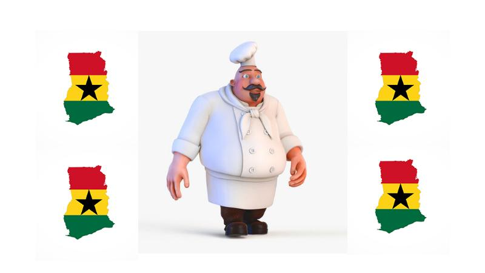

Welcome to my page!
Ghanaian dishes are colorful, tasty, and everyone’s favourite on the menu.
This minimalist web page design in HTML5 is dedicated to showcasing some selected Ghanaian dishes and their recipes.
Hopefully, we can all get a satisfactory scroll through the recipes listed below.
